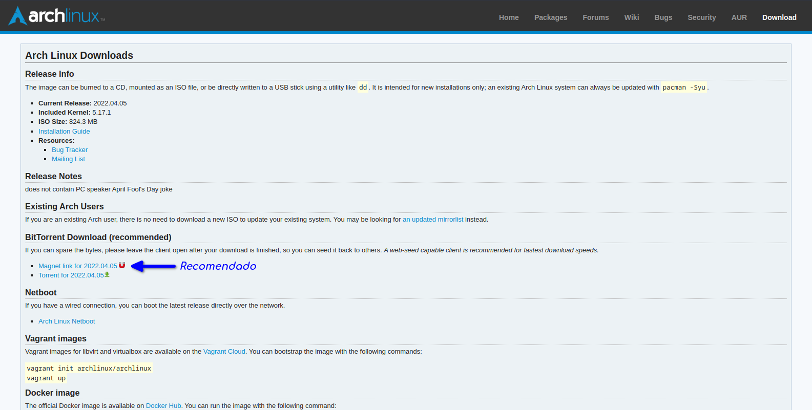

Para realizarmos o download do Arch basta entrar na página de download do site oficial do projeto.
É recomendado o download utilizando Torrent, mas pode escolher o meio que achar melhor.
Após realizar o download da imagem iso do Arch, precisamos criar um pendrive bootavel com a imagem para que possamos iniciar a instalação, não irei ensinar a fazer isto aqui mas é bem simples, uma rápida pesquisa no google já deve resolver